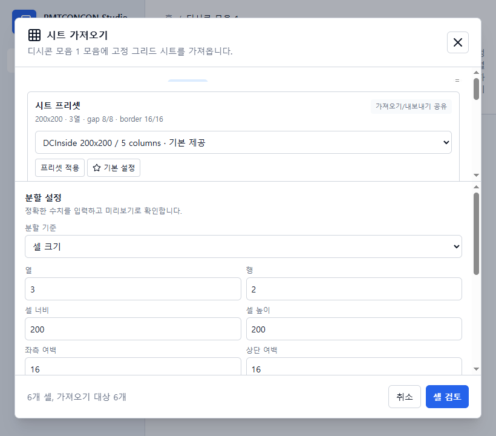
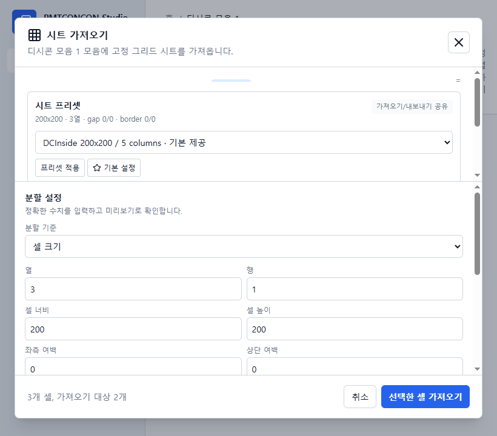
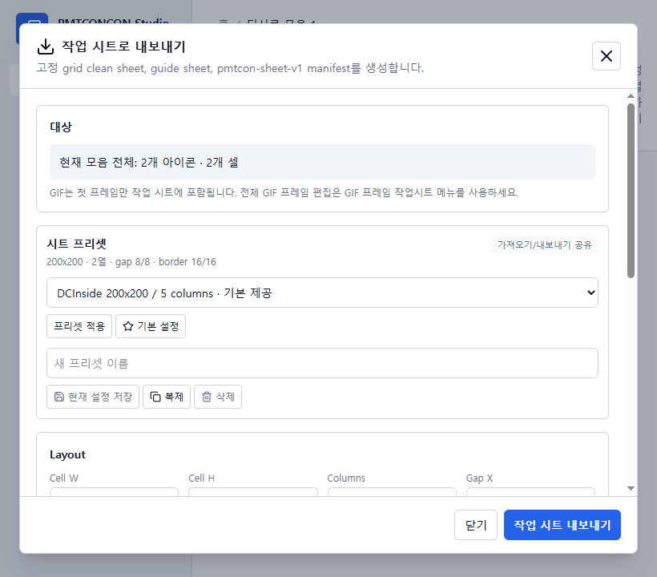
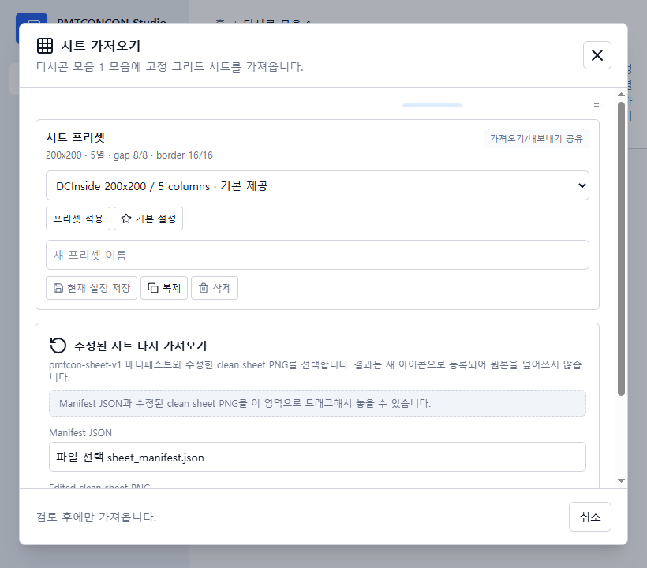
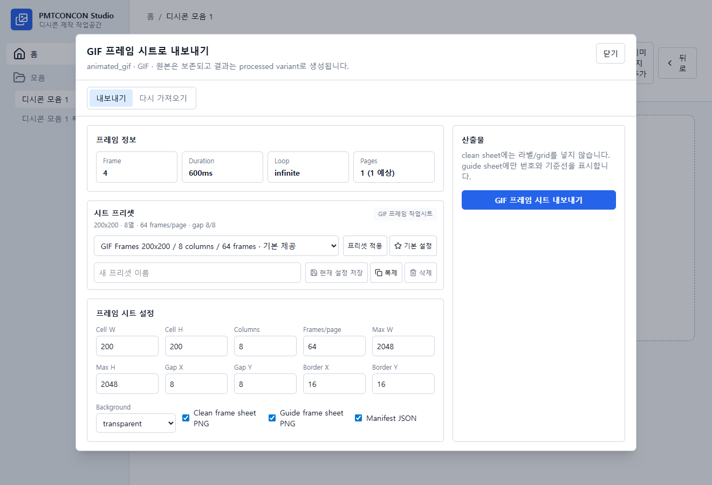
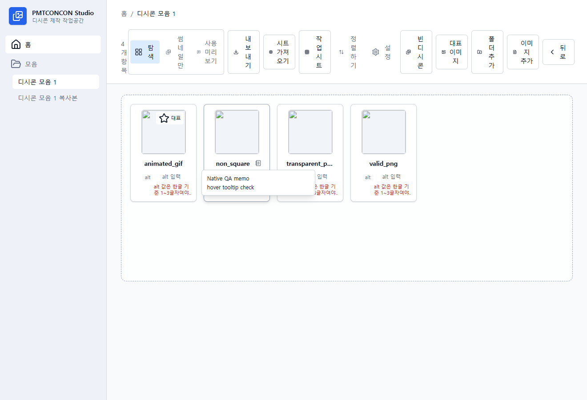
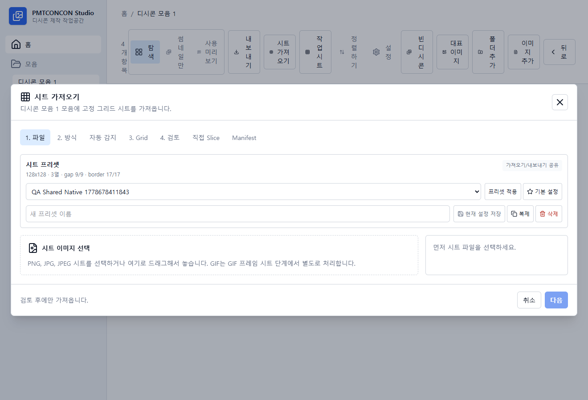
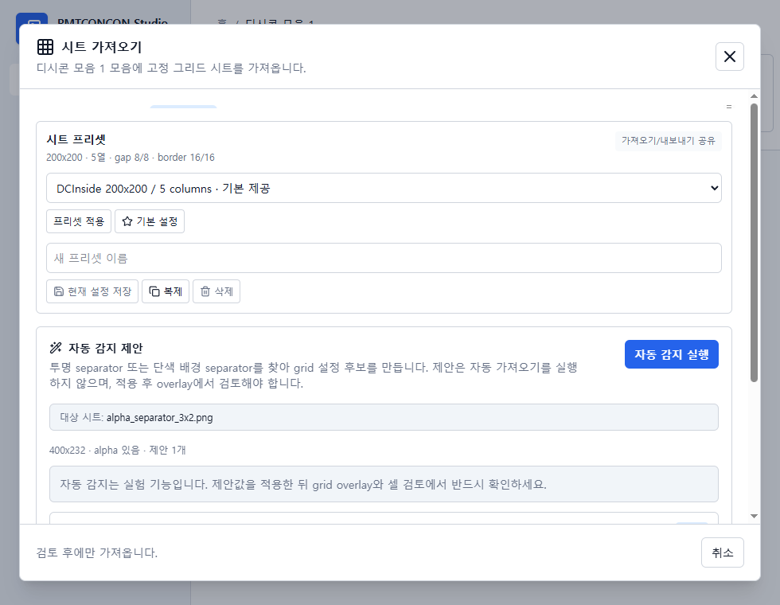
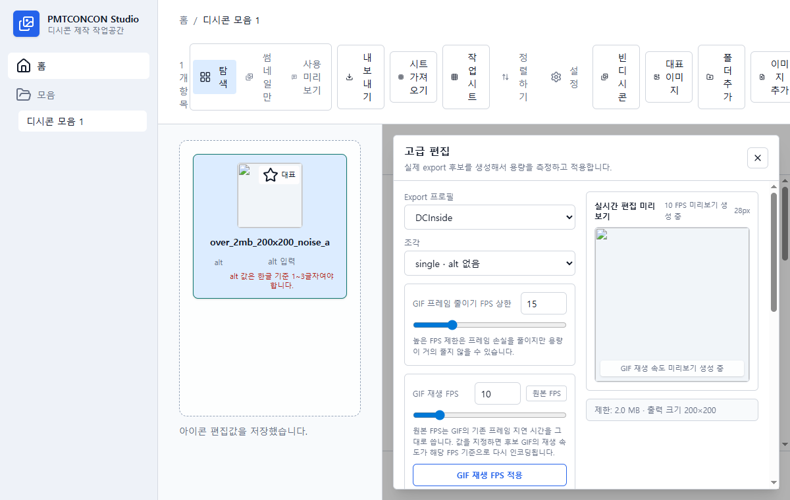

목차
1. 화면 구성과 탐색
PMTCONCON Studio는 파일 탐색기처럼 모음을 열고, 아이콘을 격자로 보고, 선택한 항목을 편집하는 구조입니다. 상단에는 탐색, 썸네일만, 사용 미리보기, 내보내기, 정렬, 설정, 빈 디시콘, 대표 이미지, 폴더 추가, 이미지 추가가 배치됩니다.

가져오기, 빈 디시콘 추가, 대표 이미지 설정, 내보내기, 사용 미리보기로 바로 이동합니다.
각 카드는 썸네일, 표시 이름, alt 값을 보여주며 더블클릭하면 편집 패널이 열립니다.
홈과 모음 목록을 전환합니다. 다른 모음으로 이동할 때도 같은 방식으로 탐색합니다.
2. 선택, 메뉴, alt 정리
Ctrl 클릭으로 여러 아이콘을 하나씩 추가 선택하고, Shift 클릭으로 범위를 선택합니다. 선택 후 우클릭하면 선택 개수에 맞는 메뉴가 열리며, 여러 alt 값을 한 번에 넣을 수 있습니다.


| 메뉴 | 용도 | 확인할 점 |
|---|---|---|
| 편집 | 오른쪽 편집 패널을 열어 crop, 모양, 셀 크기, GIF 반복을 조정합니다. | 적용 전까지 원본 파일은 보존됩니다. |
| alt 일괄 변경 | 여러 아이콘의 alt를 순서대로 입력합니다. | DCInside 기준에서는 1~3글자, 중복 없음, 허용 특수문자만 사용해야 합니다. |
| 작업중 / 완료 | 아직 대체 이미지나 alt가 준비되지 않은 아이콘을 표시합니다. | 내보내기 전에는 작업중 항목을 다시 확인하는 것이 좋습니다. |
| 대표 이미지로 설정 | 모음 카드의 표지 이미지를 바꿉니다. | 첫 imported 아이콘이 기본 표지이며, 나중에 원하는 아이콘으로 바꿀 수 있습니다. |
3. 빈 디시콘과 작업중 디시콘
빈 디시콘은 아직 이미지가 없지만 순서와 alt 자리를 먼저 잡아야 할 때 사용합니다. 추가한 빈 디시콘은 `작업중` 배지를 달고 격자에 들어가며, alt가 비어 있거나 규칙에 맞지 않으면 카드 아래에 오류가 표시됩니다.

4. 단일콘 crop 편집
아이콘을 더블클릭하면 오른쪽에 아이콘 편집 패널이 열립니다. 단일콘은 한 개의 출력 파일을 만들며, 셀 크기와 crop 박스 크기를 조정해 원본의 일부만 선택할 수 있습니다.

crop 박스의 위치와 크기를 직접 조절합니다. 모양이 단일이면 1:1 비율, 가로 2칸이면 2:1 비율, 세로 2칸이면 1:2 비율을 유지합니다.
선택한 셀 크기에 맞춰 crop 박스 크기를 고정하고, 위치만 움직입니다. 정렬 버튼으로 모서리와 중앙에 빠르게 배치할 수 있습니다.
좌우 반전, 상하 반전, 왼쪽 90°, 오른쪽 90°를 현재 결과에 이어서 적용합니다. GIF는 모든 frame이 함께 변형됩니다.
90° 회전하면 셀 너비와 높이가 교환되고 가로 2칸과 세로 2칸도 함께 전환됩니다. alt는 화면에서 이동한 조각 내용을 따라갑니다.
- 아이콘을 더블클릭해 편집 패널을 엽니다.
- 모양에서 단일을 선택합니다.
- 셀 크기 입력칸에서 너비와 높이를 조정합니다. 기본값은 DCInside 기준 200×200입니다.
- crop 박스를 움직이거나 크기 조절 핸들을 드래그합니다.
- 필요하면 변형에서 회전·반전을 누르고 출력 미리보기를 확인합니다.
- 적용을 누르면 crop·변형 metadata, preview와 export 후보가 함께 갱신됩니다. 원본 파일은 바뀌지 않습니다.
5. 가로 2칸 디시콘
가로 2칸은 하나의 아이콘이 좌우 두 조각으로 나뉘는 형태입니다. crop viewport는 셀 너비의 2배와 셀 높이로 잡히며, 내보내기에서는 왼쪽 조각과 오른쪽 조각이 별도 파일로 생성됩니다.


6. 정적 효과·모션·GIF·텍스트 고급 편집
고급 편집은 정적 효과, 모션, 텍스트·용량 탭으로 나뉩니다. 픽셀 효과와 움직임, GIF 재생·용량 후보, 텍스트와 폰트 설정을 같은 아이콘의 비파괴 recipe로 관리합니다. GIF는 preview와 export에서 애니메이션을 유지해야 하므로, 반복 방식과 frame 처리 결과를 확인하는 것이 중요합니다.

원본 frame 간격을 유지하거나 지정 FPS 기준으로 다시 인코딩할 수 있습니다. 적용 전에도 실시간 편집 미리보기에서 속도를 확인할 수 있습니다.
GIF 용량을 줄여야 할 때 색상 수를 낮춰 export 후보를 다시 만듭니다.
문구, 크기, 위치, 글자색, 외곽선색, 외곽선 두께를 조정해 이미지 위에 자막을 얹습니다.
7. 사용 미리보기
사용 미리보기는 실제 DCInside 댓글 화면에 가까운 형태로 아이콘을 호출해 보는 공간입니다. 가로 2칸 아이콘은 팔레트에서 한 항목으로 보이지만, 왼쪽과 오른쪽 piece를 따로 삽입할 수 있습니다.

- 상단의 사용 미리보기를 누릅니다.
- 왼쪽 아이콘 팔레트에서 원하는 아이콘을 찾습니다.
- 단일콘은 아이콘을 클릭하고, 가로 2칸은 왼쪽 또는 오른쪽 piece 버튼을 선택합니다.
- 오른쪽 댓글 미리보기에서 크기, 순서, alt 표시를 확인합니다.
8. 내보내기 작업공간
내보내기 작업공간은 현재 모음과 export 결과를 나란히 보여줍니다. DCInside profile 기준으로 출력 수, 파일 형식, 셀 크기, 용량 제한, alt 중복, alt 길이와 허용 문자를 검사합니다.


| 검증 항목 | DCInside 기본 기준 | 작업공간에서 보는 위치 |
|---|---|---|
| 출력 개수 | 10개 이상 200개 이하 | 상단 요약의 포함, 제외, 업로드 가능, 경고, 업로드 불가 |
| 셀 크기 | 기본 200×200 | 상단 `셀 너비`, `셀 높이` 입력칸과 결과 표의 크기 제한 열 |
| 형식 | jpg, png, gif | 상단 형식 선택과 결과 표의 형식 열 |
| 용량 | 파일당 최대 2MB | 용량 제한 입력칸, 결과 표의 크기/제한 열, 선택 항목 경고 |
| alt | 중복 없음, 한글 1~3글자, 허용 특수문자 * ^ ! ~ + |
격자 카드, alt 일괄 변경 대화상자, 결과 표의 alt 열 |
9. 스프라이트 시트 / 작업 시트
시트에서 가져오기는 큰 PNG/JPG 시트를 고정 격자로 잘라 새 아이콘으로 가져오는 도구입니다. 시트로 내보내기는 여러 아이콘을 같은 크기의 셀에 배치한 PNG와 manifest JSON으로 내보내 외부 편집 후 다시 가져오는 워크플로우입니다. clean sheet에는 라벨과 격자가 없고, guide sheet는 사람 확인용 안내선과 이름을 포함합니다. GIF 또는 모션 적용 아이콘은 정적 작업 시트에 0ms 포스터 프레임 한 장만 들어가며, 내보낼 때 애니메이션 손실 경고가 표시됩니다.




render_recipe_hash에는 crop·변형·텍스트·정적 효과·모션이 포함됩니다.
시트를 내보낸 뒤 recipe가 바뀌면 가공본 적용·교체 모드에서 해당 셀을 건너뛰고 결과에 보고합니다.
원본 아이콘은 바뀌지 않으며, 애니메이션 전체를 수정하려면 정적 작업 시트가 아니라 GIF 프레임 작업 시트를 사용하세요.
10. GIF 만들기와 프레임 작업 시트
모음 도구의 시트로 GIF 만들기에서는 매니페스트가 없는 PNG/JPG 프레임 시트를 기존 시트 가져오기와 같은 grid, gap, border, 읽기 순서로 나눕니다. 셀을 검토한 뒤 한 줄 프레임 스트립에서 Ctrl/Shift 선택, 드래그·키보드 정렬, 복제·삭제, 프레임별 시간과 FPS 편의 입력, 정방향·역방향·핑퐁, 반복을 편집할 수 있습니다.
GIF 아이콘을 우클릭하면 GIF 프레임 작업시트로 내보내기와 GIF 프레임 작업시트로 교체하기를 사용할 수 있습니다. 내보내기는 모든 프레임을 PNG frame sheet로 펼치고, manifest에 frame index, duration, loop mode, page와 cell 좌표를 저장합니다.

| 작업 | 결과 | 주의 |
|---|---|---|
| 정적 프레임 시트로 새 GIF 만들기 | 실측된 animated source와 새 아이콘, 원본 시트 provenance 생성 | GIF의 1비트 alpha·256색 한계와 모음 byte 제한을 경고합니다. |
| 정적 작업 시트에 GIF 포함 | 0ms 포스터 프레임 한 장만 contact sheet에 포함 | 애니메이션 손실 경고가 표시되며, 재구성에는 사용하지 않습니다. |
| GIF 프레임 시트 내보내기 | 모든 프레임 PNG sheet, guide sheet, GIF manifest 생성 | duration·loop와 motion을 포함한 source/render recipe hash가 manifest에 저장됩니다. |
| GIF 프레임 시트 교체하기 | 수정된 frame sheet로 새 GIF variant 생성 | UI는 교체라고 표시하지만 원본 GIF는 덮어쓰지 않습니다. |
11. 우클릭 메뉴, 메모, 프리셋
아이콘과 모음의 우클릭 메뉴는 실제로 실행 가능한 작업만 보여줍니다. 여러 썸네일을 선택한 뒤 우클릭하면 선택 항목만 작업 시트로 내보낼 수 있고, 모음 카드에서는 복제 메뉴로 원본 모음을 변경하지 않는 복사본을 만들 수 있습니다.


다중 선택 후 우클릭하면 현재 선택된 아이콘만 grid order로 내보냅니다. 전체 모음 내보내기와 구분됩니다.
메모 추가, 메모 수정, 메모 삭제가 tile과 우클릭 메뉴에 나타납니다. 공백만 입력하면 메모 없음으로 처리됩니다.
기본 제공 `DCInside 200x200 / 5 columns`와 `GIF Frames 200x200 / 8 columns / 64 frames` 프리셋을 바로 쓸 수 있습니다.
12. 자동 감지 실험 기능
자동 감지(실험)은 PNG 투명 separator 또는 단색 배경 separator를 분석해 grid 설정 후보를 제안합니다. 이 기능은 자동으로 가져오지 않습니다. 후보를 적용하면 기존 grid overlay와 셀 검토 단계로 돌아가 사용자가 직접 확인해야 합니다.

13. 릴리스 준비와 파일 보존
PMTCONCON Studio는 MIT License로 배포되며, 외부 업로드나 로그인 자동화 없이 로컬 파일과 앱 라이브러리에서 작업합니다. 원본 이미지와 원본 GIF는 보존되고, crop, sheet reimport, GIF frame reimport, 용량 최적화 결과는 별도 생성 파일이나 variant로 저장됩니다.

| 릴리스 확인 항목 | 현재 기준 |
|---|---|
| 자동화 검사 | npm.cmd run lint, npm.cmd run test, cargo test, npm.cmd run build, npm.cmd run tauri -- build |
| 라이선스 가드레일 | npm.cmd run license:forbidden와 npm.cmd run license:check로 금지 의존성을 확인합니다. |
| 오픈소스 고지 | THIRD_PARTY_LICENSES.md와 LICENSE_POLICY.md를 함께 제공합니다. |
| 릴리스 기록 | Release Readiness에 최근 native QA와 빌드 확인 범위를 정리합니다. |